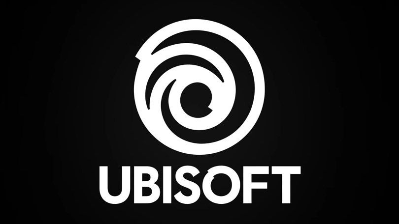

De developers oftewel de makers van deze game zijn Ubisoft Montreal. De directeur is Xavier Marquis en met behulp van Sébastien Labbé, als producer en Jalal Eddine El Mansouri, als programmeur hebben zij deze shooter ontwikkeld. Toen ze begonnen met het maken van deze game wilden ze een shooter maken dat ook nog eens echt realistisch is. Met realistisch bedoel ik dat ze echt hebben gekeken naar echte wapens of bijvoorbeeld verschillende plaatsen. Bovendien hebben ze er voor gezorgd dat je tijdens het schieten recoil hebt en door recoil kan je controle verliezen over je wapen. net als in het echte leven.